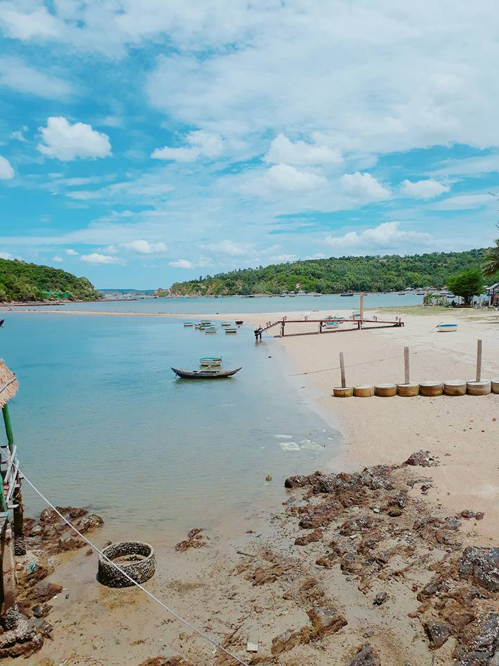

Du lịch Phú YênHấp dẫn và thân thiện! |
|
Động Cát Từ Nham - Núi Phú Sĩ Việt Nam Sông Cầu - Phú Yên |
 |
Nhất Tự Sơn - Con đường đi bộ ra đảo Vịnh Xuân Đài - Sông Cầu - Phú Yên |
Đôi khi nghĩ cũng lạ, chẳng hiểu sao một vùng đất đẹp tuyệt vời với nắng gió, núi biển chan hòa và đẹp hớp hồn người như thế, mà biết bao nhiêu năm nay, Phú Yên vẫn không phải là sự lựa chọn hàng đầu của khách du lịch ở quê nhà. Vậy mà chỉ sau vài thước phim, kéo dài vỏn vẹn không quá chục phút lại giúp Phú Yên như được "khai hoang" một lần nữa. Với biển xanh, núi non, sông hồ,... tất cả đều khiến người ta choáng ngợp và ngỡ ngàng khi nhận ra "vùng đất miền Trung ấy bấy lâu nay đã ở nơi đâu?". Việc bấy lâu nay, ta bỏ quên Phú Yên ra khỏi bản đồ du lịch của trước đây quả là một điều cực kỳ thiếu sót.
Vì thế trong năm mới này, Phú Yên chắc chắn sẽ là điểm đến được rất nhiều người chọn lựa. Nhưng trước khi đi, bạn cần phải xem và lưu lại vào cuốn sổ của mình những địa điểm nhất định không thể không đến khi ghé thăm miền đất "hoa vàng cỏ xanh" này nhé.
TIN NỔI BẬT


ĐỊA ĐIỂM ĂN UỐNG